Module for the connection between odoo and devices of the zkteco brand for the control of employee assistance. It allows you to manage the creation of users and assistance from your system in odoo, it adapts to the time zone, generating all this easier for the management of human resources of your company.
How to use?
1- Assigning the role to the person in charge of administering the Zkteco device, there are two levels of access according to the responsibilities.
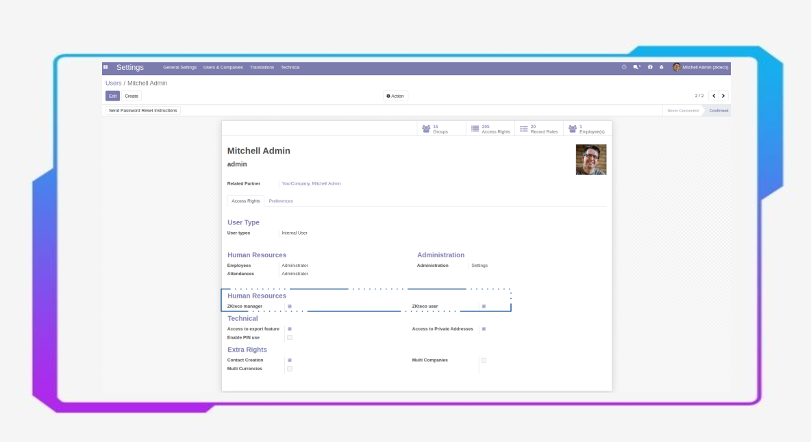
2- Associate the employee with the id with which it will be created in his makina zkteco, if the employee already exists in the device, he must put in the zknumber field the id with which he is made to later perform the synchronization.
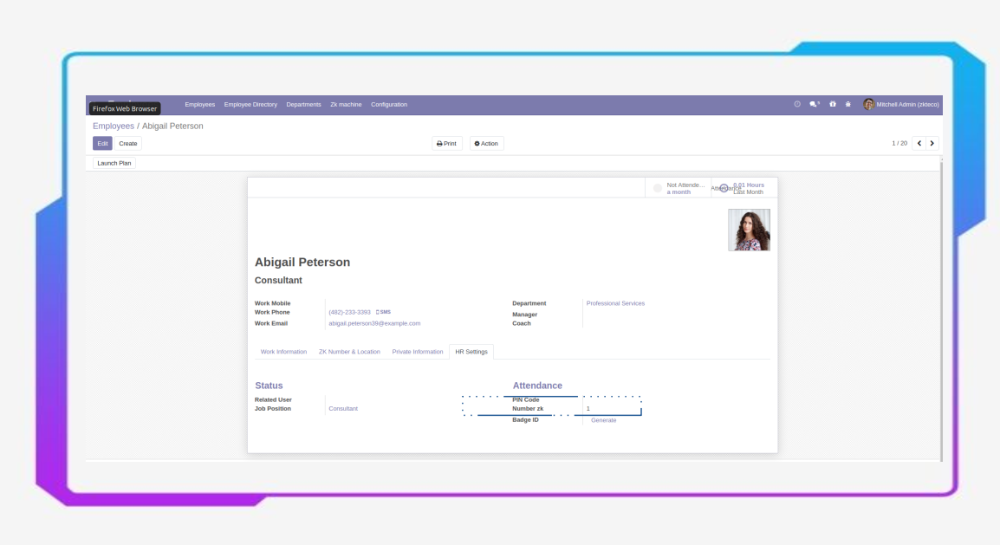
3- Create the registry associated with the zkteco device, in which the ip must be defined, the port that by default is 4370 and a location.
It is important to note that if your odoo instance is located in the cloud, you must perform additional NAT configuration and port forwarding properly to make the connection with your device possible.
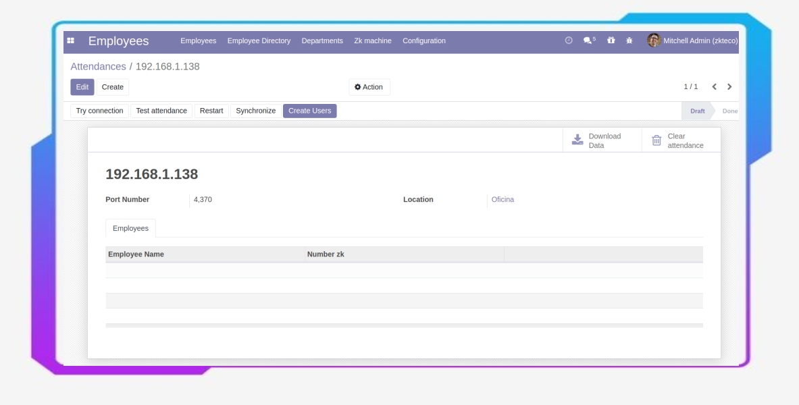
4- There are 7 buttons that will allow you to manage your device.
BUTTON 1- Button one will allow you to perform a connection test to verify that it is successful.
Clicking on it will activate a pop-up window indicating that the connection is successful and a summary of the existing users on your zkteco device.
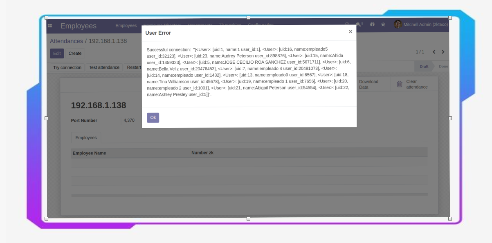
BUTTON 2- By pressing the button "Test Attendance" we can test the correct communication to transmit the attendance data.
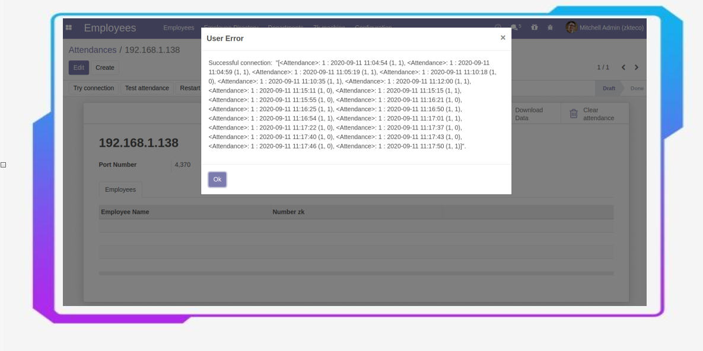
BUTTON 3- By pressing the "Restart" button you will be able to restart your zkteco device remotely.
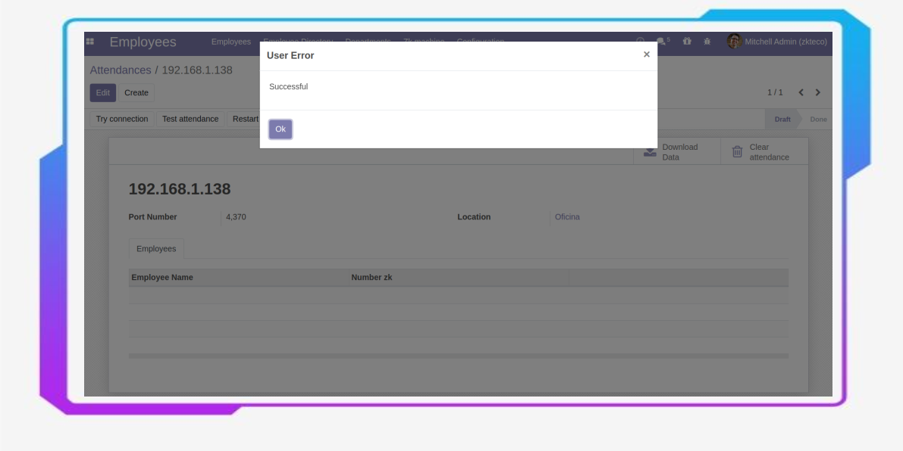
BUTTON 4- By pressing the "Synchronize" button, the module will search for employees where their zknumber matches the id of the users created on your zkteco device and will synchronize them with the registry that is being configured. It is important to note that for it to be synchronized, there must be employee and user records in zkteco where the zknumber values match.
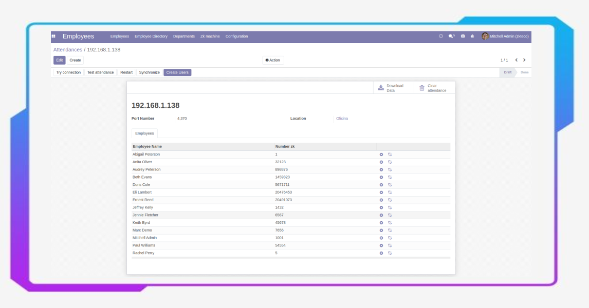
BUTTON 5- Pressing the "Create Users" button will enable a pop-up window where you can create new users on your zkteco machine, for this the employee must have assigned his zk number with which it will be created on the device, he will be able to select all the employees that you want and then press the "Create" button and the user will be created remotely on the machine and will be associated with the record on which you are creating.
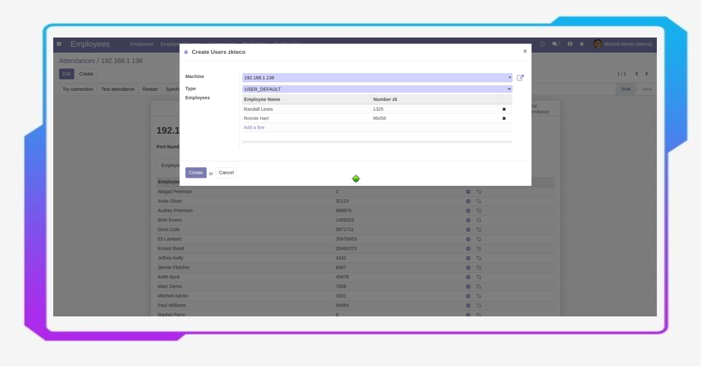
BUTTON 6- The "Download data" button will search for all the attendance records found on the device and create them as attendance records in the odoo module.
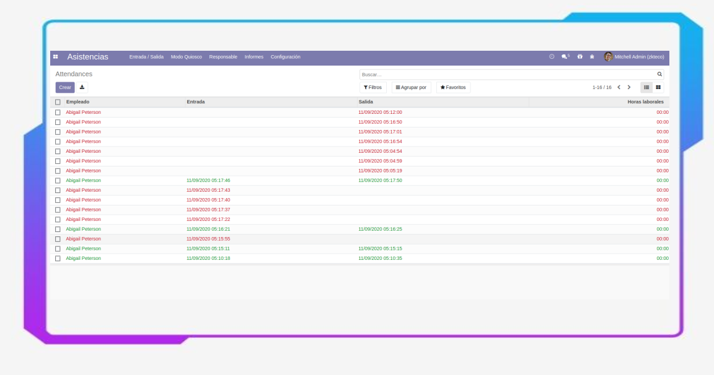
BUTTON 7- The "Clear Attendance" button will delete all attendance records found on your zkteco device.
- In addition, you can also manage the users synchronized between odoo and your zkteco machine, either to delete them remotely or unincorporate them from your odoo registry.
- Button Delete: The button marked in the image below will remove the user from your zkteco device and remove it from your odoo registry.
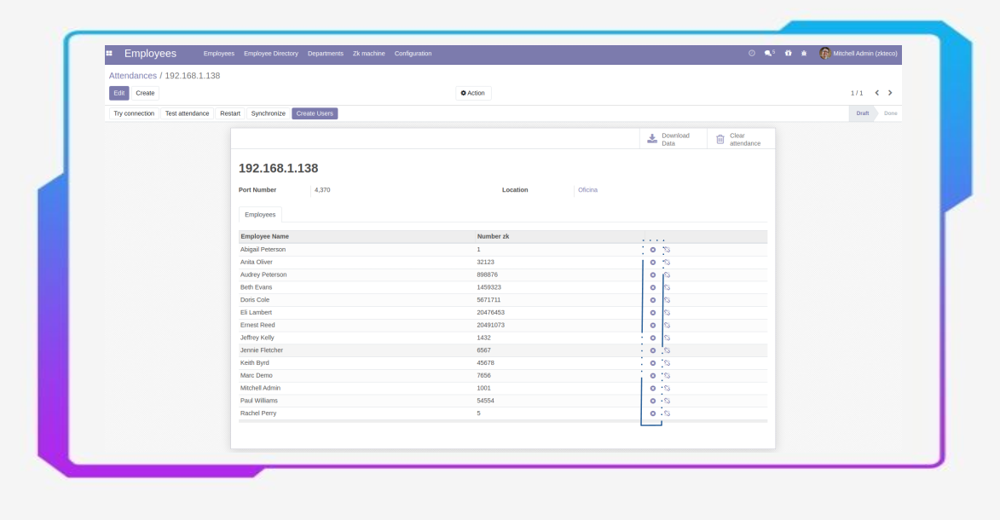
- The unlink button: This button will NOT delete the user on the device but it will unlink the user from the odoo registry..
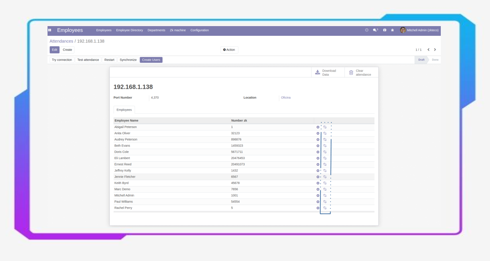
This module was developed to be compatible with any device with zkteco technology.
Devices tested with the module.
U580
iFace402
iFace800
MA300
T4-C
iClock260
K20
VF680
iClock260
K14
K30
Ronald Jack T8
If you have a zkteco device with a different model, I can contact us for compatibility tests.